How to use Alpha Premier Attendance every day and how to look after it. No technical knowledge is needed.
| You are… | Read |
|---|---|
| An intern tapping in and out | Chapter 4 (Recording attendance) and Chapter 5 (Bathroom keys). |
| Front-desk staff looking after the kiosk | Chapters 1–6, 15 and the Quick Reference Card. |
| An administrator (HR / office admin) | The whole manual, especially Chapters 7–14. |
| A manager who only views attendance | Chapter 6 (Live attendance and the office viewer). |
| Shown as | Means |
|---|---|
| Bold text | A button, tab, menu or field name exactly as it appears on screen. |
| 1 Enter | A key on the keyboard. |
| 3 | A numbered marker on a screenshot. The table or list next to the picture explains each number. |
config.toml | A file name, folder or web address. |
| Admin → Payroll | Open Admin, then click the Payroll tab. |
Screenshots use made-up sample interns (for example "Alex Rivera", "DEMO-001") and a preview copy of the software, so a few status lines may differ slightly from the front-desk computer.
Alpha Premier Attendance replaces the paper logbook at the front desk. Interns tap an RFID card, the screen shows their photo and greets them, and the time is saved.
Solid arrow: always on. Dashed arrow: optional; scans never wait for it.
| Role | What they do | Needs |
|---|---|---|
| Intern | Taps in and out; borrows and returns restroom keys. | A registered RFID card |
| Front desk | Keeps the kiosk running; helps with manual entry. | Access to the kiosk PC |
| Administrator | Registers cards, corrects attendance, runs payroll, makes backups. | Admin PIN or admin RFID card |
| Viewer (manager) | Watches today's attendance from another device. | The office Wi-Fi and viewer link |
| Item | Requirement |
|---|---|
| Computer | Windows 10 or Windows 11, 64-bit. |
| Card reader | 125 kHz EM4100 USB reader working in keyboard mode (sends 10 digits + Enter). This is the default reader. |
| Cards | One 125 kHz card per intern; at least one extra card to use as an admin RFID card. |
| Speakers | Optional, for spoken greetings. |
| Network | Optional. Office Wi-Fi for the live viewer; internet for updates, PIN-reset email and Google Sheets. |
| Installation rights | Windows administrator approval is needed once, when installing. |
Version 0.2.14 is for interns only. Every person you register is paid as an intern at PHP 80.00 per day. The payroll documents are the Intern Payroll PDF and one payslip picture per intern (Generate Intern Payslips); older employee payslips and spreadsheet payroll exports are no longer part of the app.
Do this once on the front-desk computer. It takes about 10 minutes.
Alpha Premier Attendance_…_x64-setup.exe from the company's GitHub Releases page (ask IT for the link).| You do | What happens |
|---|---|
| Turn on / log in to Windows | The app starts by itself (this is on by default; you can turn it off in Admin → Data and backup or the tray menu). |
| Click the window's X | The window hides to the tray. The app keeps running and saves an automatic backup. |
| Click the tray icon | The kiosk window comes back. |
| Open the app a second time | The window that is already running comes to the front. A second copy never starts. |
Right-click the tray icon (near the clock, bottom-right of the screen) for this menu:
| Menu item | Use |
|---|---|
| Show attendance app | Bring the kiosk window to the front. |
| Start on system startup | Tick or untick automatic start with Windows. |
| Check for updates… | Look for a newer version now (Chapter 12). |
| Exit application | Fully close the app. Cards will not register until it is opened again. |
The kiosk is the screen the front desk sees all day. It waits for a card tap; nobody needs to touch the mouse.
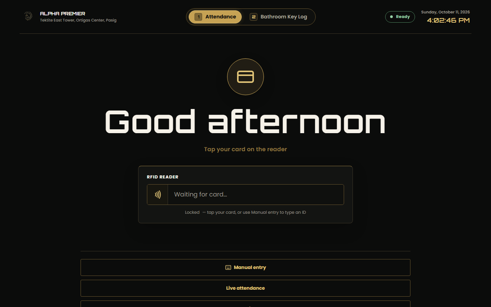
1 2 3 4 5 6 7| # | Part | What it shows or does |
|---|---|---|
| 1 | Company and office | Alpha Premier logo and the office address. |
| 2 | Mode tabs | 1 Attendance (normal) or 2 Bathroom Key Log. Click a tab or press 1 / 2. |
| 3 | Reader status | Ready (green) means taps will be read. See the table on the next page for other states. |
| 4 | Date and clock | Current Philippine date and time. |
| 5 | Greeting | "Good morning / afternoon / evening". Changes to "Reading card…" while a tap is processed. |
| 6 | RFID reader box | Shows "Waiting for card…". It is locked on purpose — just tap the card on the reader. |
| 7 | Bottom buttons | Manual entry, Live attendance, Admin and Admin setup (next page). |
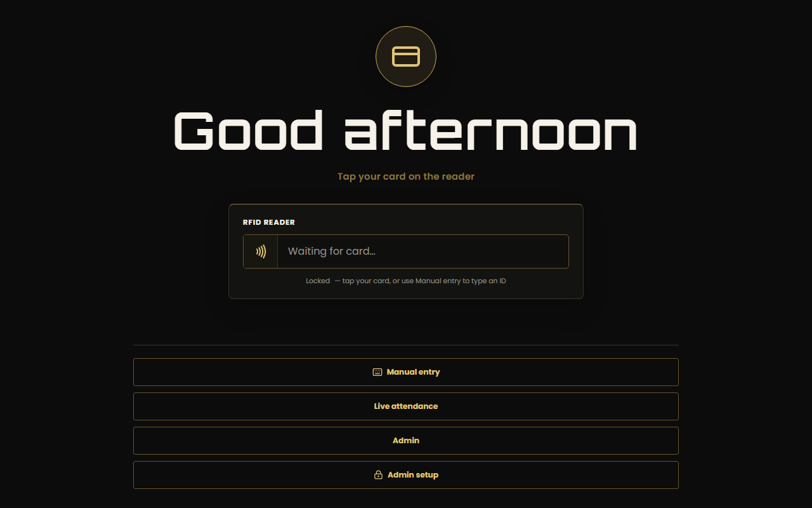
A B C D| # | Button | Use |
|---|---|---|
| A | Manual entry | Type a card number when the reader is not working (Chapter 4). Changes to Use card reader to switch back. |
| B | Live attendance | Opens today's attendance list (Chapter 6). |
| C | Admin | Opens the administrator area (Chapter 7). Needs the PIN or an admin card. |
| D | Admin setup | Quick way to register a new card or change the person on a card (Chapter 8). |
| Shows | Meaning | What to do |
|---|---|---|
| Ready | Waiting for a card. | Nothing. |
| Scanning | A tap is being read. | Wait one second. |
| Connecting… | The app is starting the reader. | Wait a few seconds. |
| Offline / Error | The reader cannot be used right now. | Check the USB cable, then see Chapter 15. Use Manual entry meanwhile. |
Hover the mouse over the pill to see more detail.
Next to the reader status a small badge reports the optional Google Sheets copy, for example "No DTR items queued", "3 queued" or "Sheet syncing paused; attendance recording continues." Taps are always saved on the computer first, so these messages never mean an attendance was lost. If it says "Attendance needs admin attention for DTR sync", tell an administrator (Chapter 12).
Press 1 for Attendance or 2 for Bathroom Key Log. The shortcut is ignored while you are typing in a box or while a window is open, so a card number is never mistaken for a mode change.
For interns. It takes about one second.
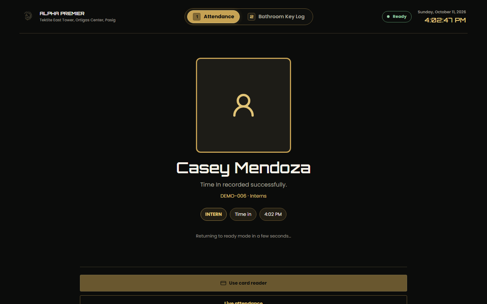
1 2 3 4Tap the same card again at the end of the day. The screen shows "Time Out recorded successfully." and you hear "Goodbye, name".
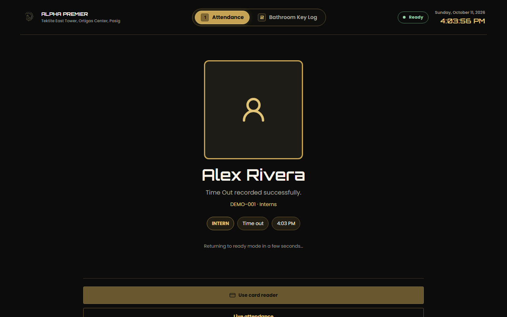
| Situation | Announcement (example) |
|---|---|
| Time in | "Good morning, Alex Rivera. Your time in has been recorded." It may add "You are late." or "You are the first arrival today." |
| Time out | "Goodbye, Alex Rivera. Your time out has been recorded." |
| Time out at/after 6 PM | "Your time out was recorded after office hours. Manual correction is required." |
| Problem | For example "This card is not registered." or "Card scanned too recently. Please wait." |
Voice can be turned off or adjusted by an administrator (Chapter 13).
If something is wrong, the screen shows a large message with a short code under it, then returns to ready after a few seconds.
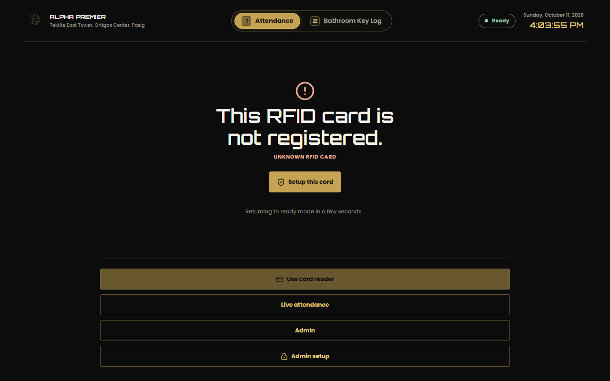
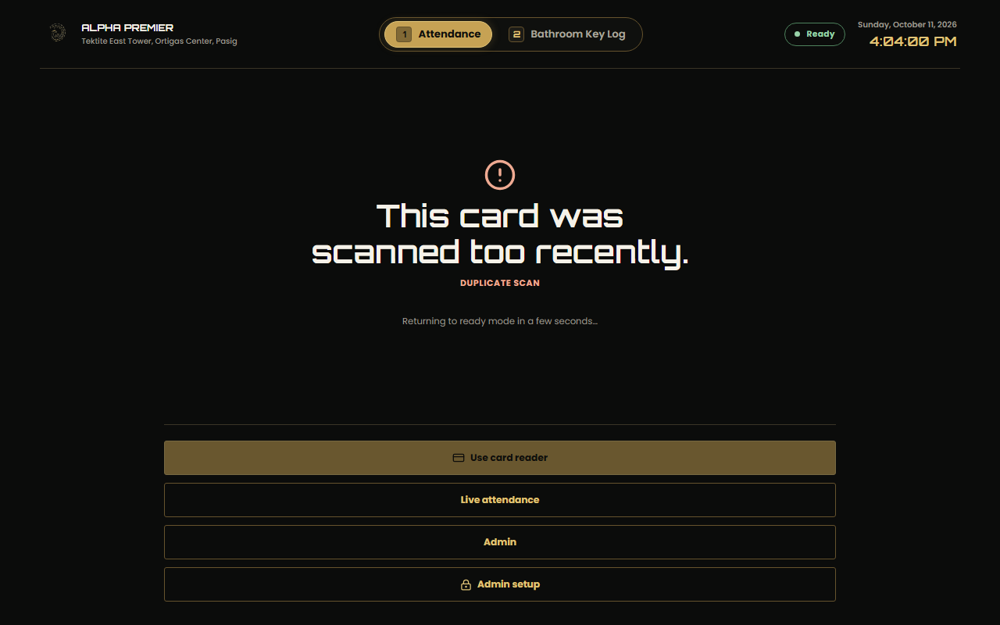
| Message (code) | Meaning and what to do |
|---|---|
| "This RFID card is not registered." (UNKNOWN RFID CARD) | The card is not linked to anyone. An administrator can click Setup this card to register it (Chapter 8). |
| "This card was scanned too recently." (DUPLICATE SCAN) | The card was tapped twice within 10 seconds. The first tap was saved. Do nothing. |
| "Attendance is already complete for today." (ATTENDANCE ALREADY COMPLETED) | Time in and time out are both done. Ask an administrator if a time is wrong. |
| "Attendance timed out after office hours and is pending manual correction." | Today was already flagged LATE TIMEOUT. An administrator must fix it. |
| "This user is inactive." (INACTIVE USER) | The person was set to Inactive. An administrator can reactivate them. |
| "Admin RFID cards cannot record attendance for themselves." | Admin cards are for unlocking and assisting only. In Attendance mode, tapping one opens the Assisted Attendance window. |
| "Card not recognized — check the reader format." | The reader sent something that is not a normal card number. Tap again; if it repeats, see Chapter 15. |
| "Attendance changed before the scan was saved." / "Attendance data is inconsistent." (ATTENDANCE DATA CONFLICT) | Rare timing clash. Tap again. |
| "Unable to save attendance." / "Unable to reach attendance service." | The app could not save. Tap again; if it repeats, restart the app and tell an administrator. |
The full list of messages is in Appendix A.
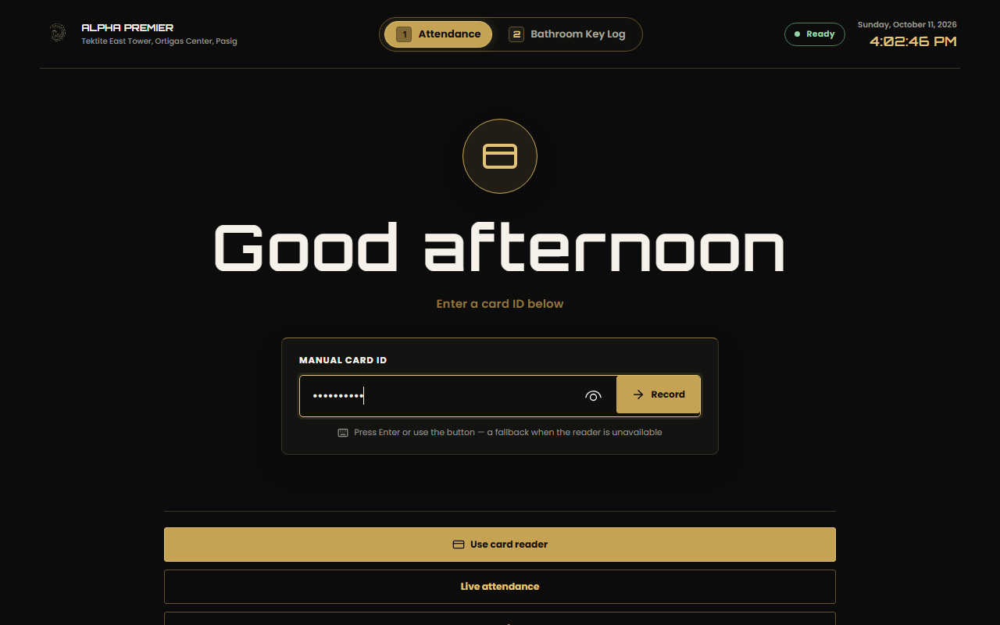
1 2 3 4An administrator can record attendance for an intern who has no working card.
There is one male and one female restroom key. The kiosk records who has each key, so the old handwritten sign-out sheet is no longer needed.
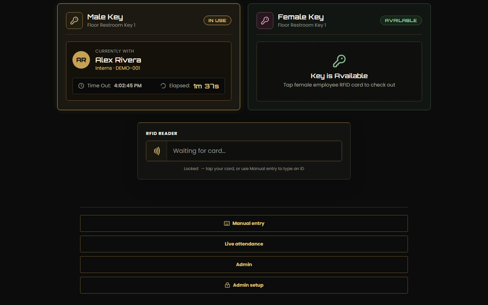
1 2 3 4 5| Message | What to do |
|---|---|
| "The male bathroom key is currently in use by name." | Wait until that person returns it. |
| "Card not registered. Please enroll in Admin Setup." | Ask an administrator to register the card. |
| "Admin Assist cards cannot checkout bathroom keys." | Use a personal card. |
| "Gender is not set for this card. Ask an administrator…" | An administrator sets Gender on the profile (Chapter 8). Until then, the admin can check the key out by hand (Chapter 11). |
See who is in today — on the kiosk itself, or on any phone or PC connected to the office Wi-Fi.
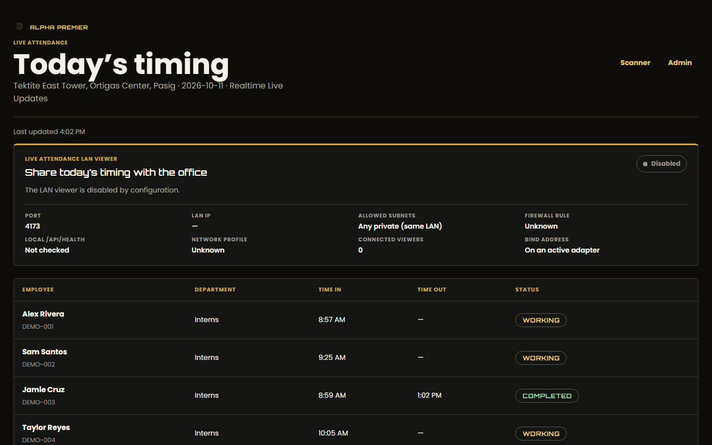
1 2 3 4 5| # | Part | Meaning |
|---|---|---|
| 1 | Today's timing | Office, today's date and "Realtime Live Updates". The list refreshes after every tap and every 5 seconds. |
| 2 | Scanner / Admin | Back to the kiosk, or to the admin area. |
| 3 | Last updated | Time of the latest refresh. "Showing last successful update" means the newest data could not be loaded yet. |
| 4 | LAN viewer panel | Lets other devices watch this list (next page). |
| 5 | Status | WORKING timed in only · COMPLETED in and out · LATE TIMEOUT correction needed · MISSED no valid time in. |
The front-desk computer can show today's list to managers on the same Wi-Fi. They only need a web browser; nothing is installed. The viewer is read-only: it never shows admin pages, payroll, photos or edit buttons.
http://192.168.1.25:4173/attendance.Other buttons: Open Local Viewer (test the page on this computer), Stop viewer, Refresh status.
When IT has turned on password mode, add ?token= and the password to the end of the link, for example http://192.168.1.25:4173/attendance?token=YourPassword. Without it the page says "Viewer access required". The copied link does not include the password; add it yourself.
| Fact | Good value | If not |
|---|---|---|
| LAN IP | An address such as 192.168.x.x | Connect the PC to the office Wi-Fi. |
| Network profile | Private — office-ready | "Public" blocks phones. Ask IT to set the Wi-Fi to Private (Chapter 15). |
| Firewall rule | Allow rule found | Ask IT to allow port 4173 (Chapter 15). |
| Local /api/health | Reachable locally | Restart the app. |
| Connected viewers | How many devices are watching | — |
config.toml and take effect after restarting the app.The admin area is protected. Unlock it with the administrator PIN or a registered admin RFID card.
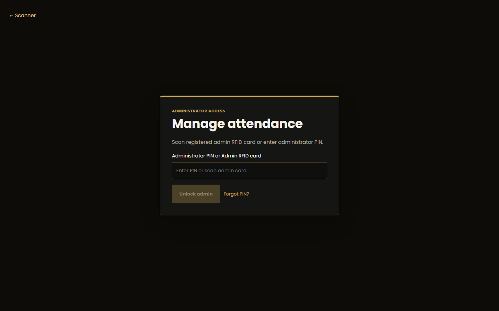
1 2 3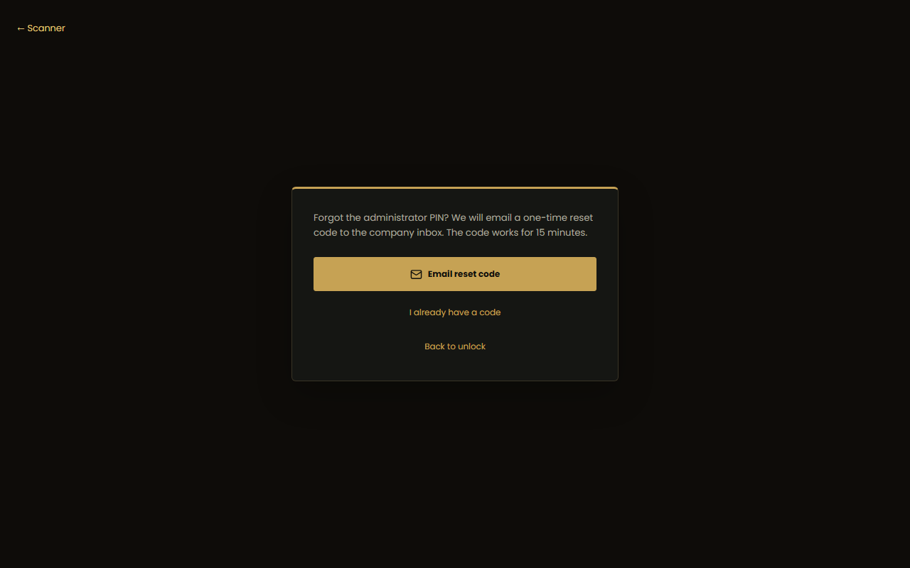
A one-time 6-digit code is emailed to the company inbox thealphapremiergroup@gmail.com. The computer needs internet for this.
The same Forgot PIN? link is in the kiosk's Admin setup window.
Already have a code from earlier? Click I already have a code. Need another? Click Send a new code — earlier codes then stop working.
| Message | What to do |
|---|---|
| "That code is incorrect. Check the email and try again." | Use the code from the email with the matching request ID. |
| "That code expired or was entered wrong too many times." | Click Send a new code. |
| "A code was requested less than a minute ago…" | Use the newest email, or wait one minute. |
| "The reset email could not be sent…" | Check the internet connection; try again. |
| "The new PIN must be 6 to 12 digits and cannot be a repeated or sequential number…" | Choose a less predictable PIN. |
| "Too many wrong codes today…" | Use an admin card, wait until tomorrow, or ask IT. |
| "Administrator access is turned off on this kiosk." | IT has disabled admin access in the settings file. Contact IT. |
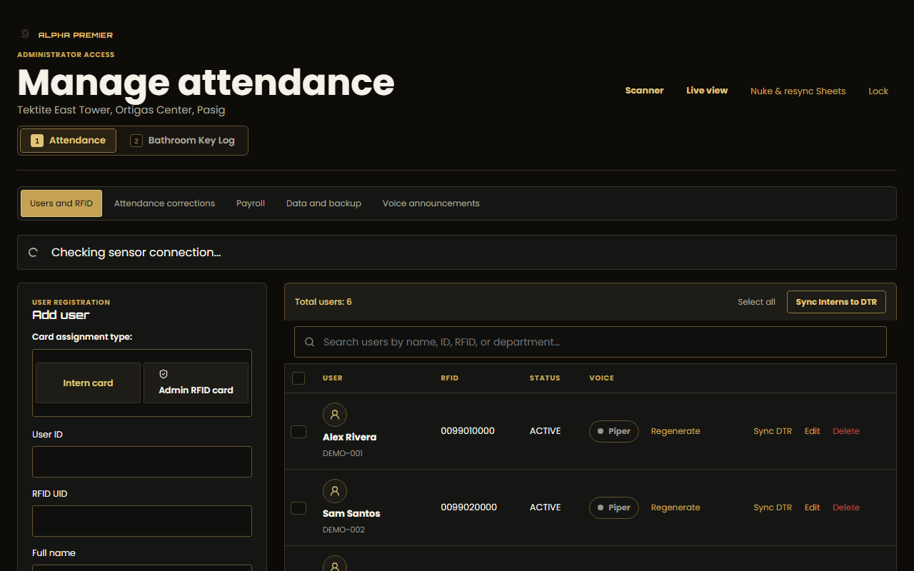
1 2 3 4 5 6 7 8 9| # | Part | Use |
|---|---|---|
| 1 | Manage attendance | You are in the admin area of this office. |
| 2 | Mode switch | 1 Attendance shows the five tabs below; 2 Bathroom Key Log shows the key log (Chapter 11). Keys 1/2 also work. |
| 3 | Scanner | Back to the kiosk screen. |
| 4 | Live view | Open Live attendance (Chapter 6). |
| 5 | Lock | End the admin session now. |
| 6 | Tabs | Users and RFID (Ch. 8) · Attendance corrections (Ch. 9) · Payroll (Ch. 10) · Data and backup (Ch. 12) · Voice announcements (Ch. 13). |
| 7 | Reader strip | Reader status: "Waiting for card", "Scan received", "Paused — this screen is typing", "Scanner unavailable" or "Scan error", with the last activity. |
| 8 | Work area | Changes with the tab. Here: the user registration form. |
| 9 | Lists and actions | Here: the user list with search, bulk actions and DTR sync. |
The Nuke & resync Sheets link in the picture appears only in developer copies of the app; it is not on the front-desk computer.
Every intern needs a profile linked to their card. There are two ways to register: the quick Admin setup window on the kiosk (best for tapping new cards), or the Users and RFID tab.
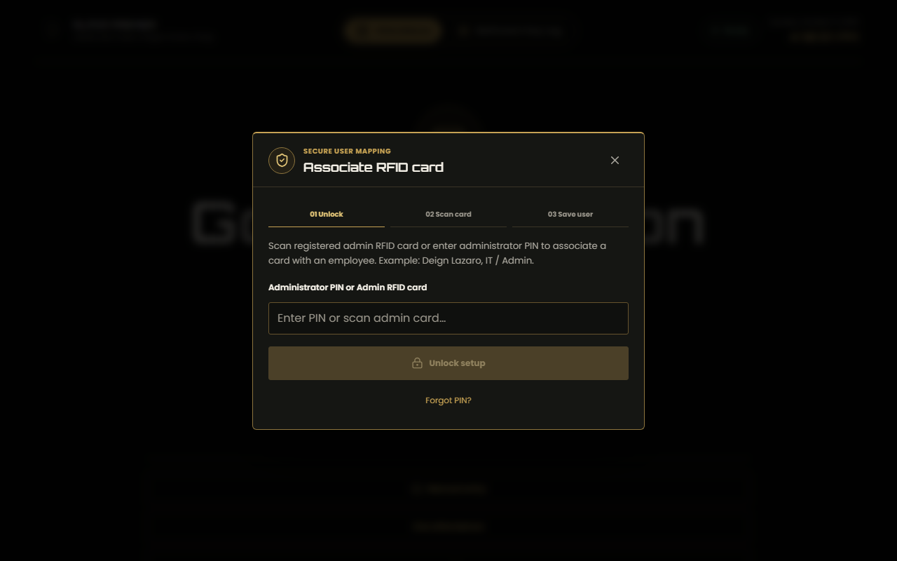
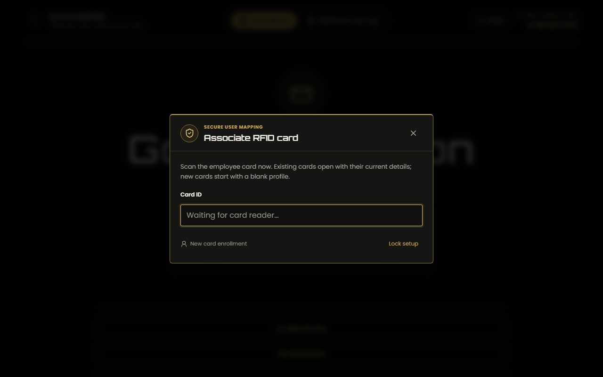
Close the window with X, Esc or by clicking outside it. If unlocking Admin elsewhere replaces this session, you see "Your setup session expired or was replaced" — unlock again.
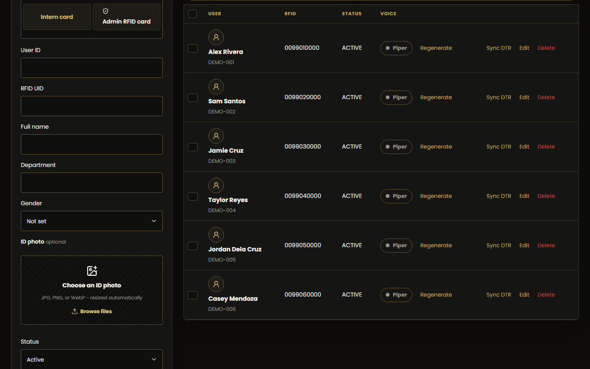
1 2 3 4 5 6 7 8 9 10| # | Field | Rules |
|---|---|---|
| 1 | Card assignment type | Intern card for staff, Admin RFID card for unlock/assist cards (these never record their own attendance). |
| 2 | User ID | Required; letters, numbers, dash, underscore, dot. Cannot be changed later. |
| 3 | RFID UID | Required. The card number. Each card can belong to one person only. |
| 4 | Full name | Required. Capitalised automatically. |
| 5 | Department | Optional. |
| 6 | Gender | Not set / Male / Female. Decides which restroom key the person gets; with "Not set" the kiosk refuses restroom keys. |
| 7 | ID photo | Optional JPG, PNG or WebP under 25 MB; resized automatically. Enter the User ID first. Drag a file in or click Browse files. |
| 8 | Status | Active or Inactive (inactive cards are refused at the kiosk). |
| 9 | Voice | Bea = recorded name clip ready; Queued; Piper = the computer voice reads the name. |
| 10 | Row actions | Regenerate voice clip · Sync DTR · Edit · Delete. |
Fill in the fields and click Save user at the bottom of the form. "This RFID card or User ID is already assigned to another user." means the card or ID is taken.
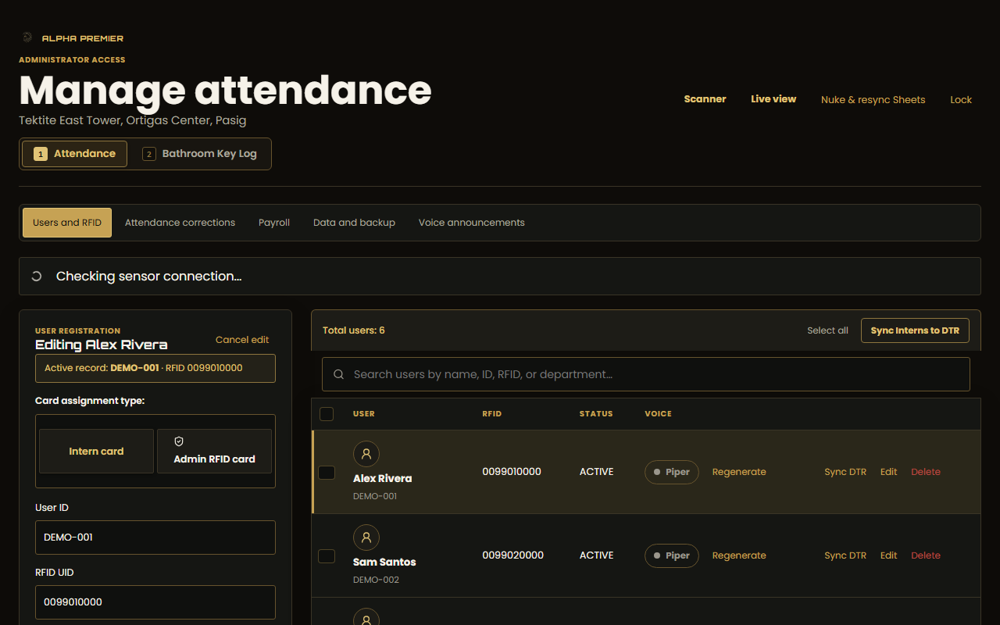
Set Status to Inactive and save. Their history and payroll stay; their card stops working.
Tick the boxes on the left of the rows, then use Set Active (n), Set Inactive (n) or Delete selected (n). Clear selection unticks all.
Each intern's name can be spoken in the cloned "Ma'am Bea" voice. Click Regenerate to make a fresh clip (up to 2 minutes; "Queued…" or "Cloning…" is shown). Until it is ready the computer voice says the name.
Sync DTR (on a row) or Sync Interns to DTR (top of the list) copies interns to the "INTERN DTR" Google Sheet. Progress messages such as "Syncing intern 3 of 12" appear; it needs internet.
Admin → Attendance corrections. View any day, fix wrong times, add days that were missed, and export to CSV.
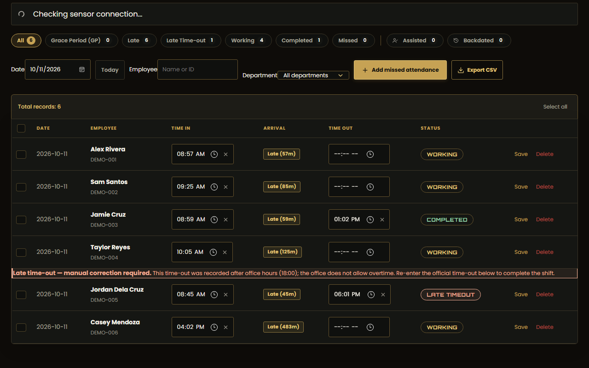
1 2 3 4 5 6 7 8 9 10| # | Part | Use |
|---|---|---|
| 1 | Filter chips | All, Grace Period (GP), Late, Late Time-out, Working, Completed, Missed, Assisted, Backdated — each with a count. GP only applies before 1 Oct 2026. |
| 2 | Date / Today | Choose the day to show. |
| 3 | Employee, Department | Narrow the list by name/ID or department. |
| 4 | Add missed attendance | Create a past day that was never tapped (next page). |
| 5 | Export CSV | Save the rows currently shown to a spreadsheet file. |
| 6 | Time in / Time out | Edit the times; the small × clears a time. |
| 7 | Arrival | On time, Grace Period (GP) or Late (minutes). |
| 8 | Status | Working, Completed, Late timeout or Missed. |
| 9 | Save / Delete | Save the row's new times, or delete the record. |
| 10 | Red banner | "Late time-out — manual correction required." The row below needs the official time-out. |
Saving also re-prices that day's pay straight away. Times you do not touch keep their exact original seconds.
| Times saved | Status becomes |
|---|---|
| Time in and time out before 6:00 PM | COMPLETED |
| Time out at or after 6:00 PM | LATE TIMEOUT |
| Time in only | WORKING |
| No times | MISSED |
Click Delete on a row and confirm "Delete attendance record?". To delete several, tick the rows and click Delete selected (n).
Columns: employee name and ID, department, date, time in, arrival, time out, status, total hours (whole hours, maximum 8, lunch not removed), source, recorded by, reason, recorded at, actual time in.
Use this when an intern worked on a past day but no tap was saved — for example they forgot their card and nobody used assisted attendance.
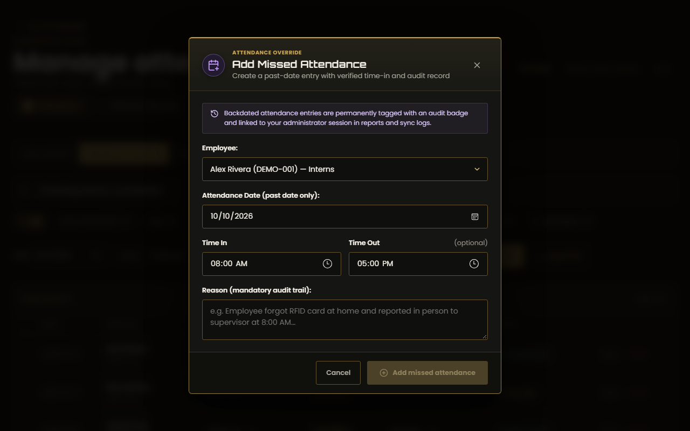
1 2 3 4 5 6| If you see | Why |
|---|---|
| "Backdated attendance date must be strictly in the past." | Today cannot be backdated; use the kiosk or assisted attendance. |
| "An attendance record already exists for this employee on this date…" | Correct the existing row instead. |
| "…date falls within a finalized payroll cutoff." | That pay period is already finalized. |
| "Time-out cannot precede time-in." | Check AM/PM. |
Admin → Payroll. Intern pay is calculated automatically from attendance, twice a month: the 1st–15th and the 16th–last day.
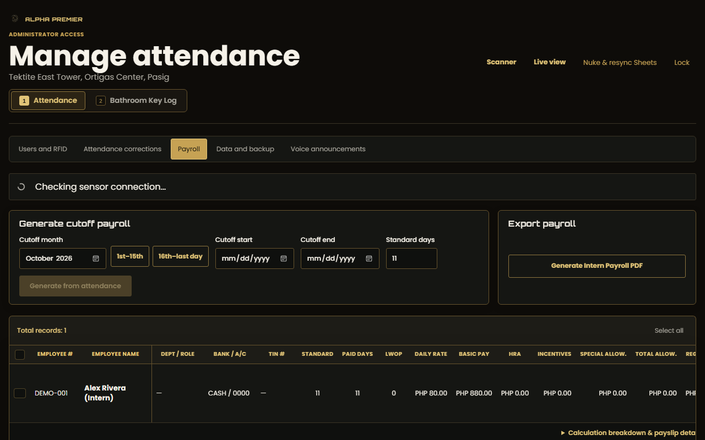
1 2 3 4 5 6 7 8Columns such as HRA, SSS, PhilHealth, HDMF and Overtime are kept for the payroll sheet layout and are always PHP 0.00 for interns. Bank / A/C shows "CASH / 0000" when empty.
Only the manual adjustment can be edited. To change days, late hours or half days, correct the attendance and generate again.
Click Delete on a row, or Delete all records for this cutoff (n) in the yellow banner, or tick rows and click Delete selected (n). Attendance is not affected; you can generate again afterwards.
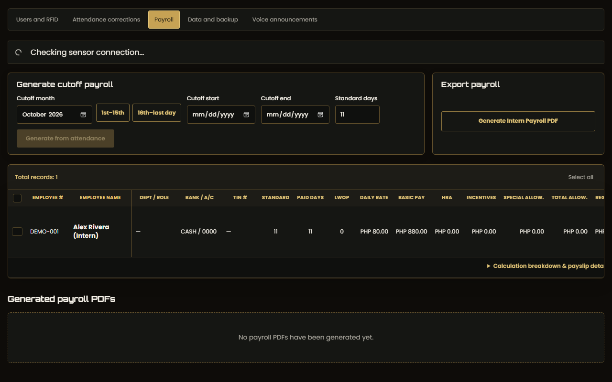
1 2| The PDF contains | Details |
|---|---|
| Header | Company name, cutoff label, "Cut off 1-15th of the month / 16-31st". |
| One row per intern | Employee #, name, cut-off rate, daily rate, actual days, standard days, total compensation, late (10/hr), half day, undertime, absent, net compensation and a Signature column. |
| Grand Total | Sum of everyone's net pay, highlighted. |
| Layout | A4 landscape, up to 18 interns per page. Drafts and finalized rows are both included. |
Files are named like payroll_2026-10-16_09-30-12_intern.pdf and saved in the app's exports folder (Appendix B). The list shows period, number of interns and total for each file.
| If you see | Do this |
|---|---|
| "No payroll records to generate. Create and save a payroll first." | Generate the cutoff first (page "Payroll"). |
| "No payroll records exist for these cutoff dates…" | Set the start/end dates to a cutoff you have generated, or generate it first. |
| "The file could not be found…" | The PDF was moved or deleted; generate it again. |
| "Administrator session expired…" | Unlock admin again. |
Admin → click 2 Bathroom Key Log (or press 2). Check keys in and out by hand, view any day's log and correct times.
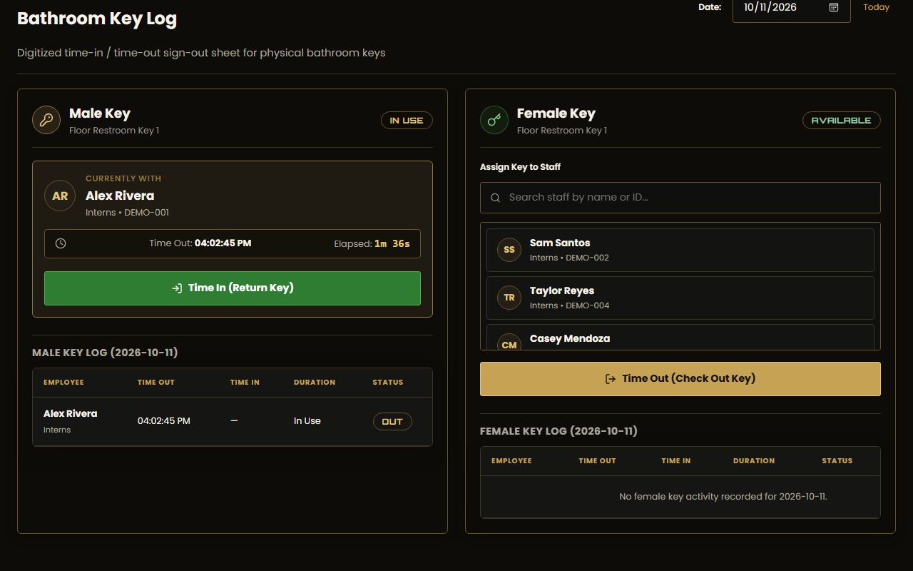
1 2 3 4 5 6Log columns: Employee, Time Out, Time In, Duration ("In Use" while out), Status (OUT / RETURNED). Return time cannot be earlier than checkout, and both must be on the log date.
Admin → Data and backup. All records live in one database on this computer. Back it up regularly.
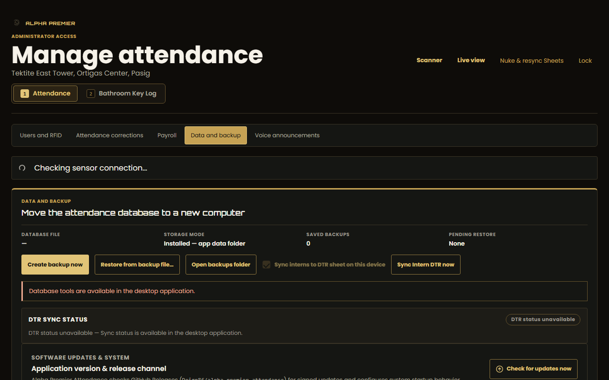
1 2 3 4 5 6The top of the tab shows the Database file location, Storage mode (Installed or Portable), number of Saved backups and any Pending restore.
A backup file contains the database, photos, exports, sync state and settings. The app keeps the newest 10, and also makes one automatically every time the window is closed.
.apbackup (or .db) file.backups/pre-restore-*.db, so it can be recovered by IT. If a restore fails you see "Restore didn't go through — your current data is safe" with Try again… and Dismiss.attendance-backup-*.apbackup file to a USB drive.If the office uses the Google Sheets daily time record, each tap is queued and copied in the background when internet is available. Taps are never lost while waiting.
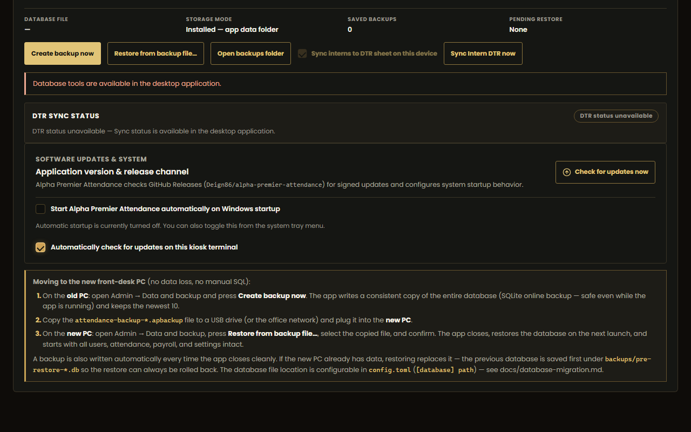
1 2 3The app checks for a new version shortly after starting and every 8 hours. When one is ready, a banner says "Update available". Click View & install, read the notes, then Download & restart (or Later). Do not close the window while it says "Installing update…". Attendance data is kept.
Admin → Voice announcements. Control the spoken greetings. Everything runs on this computer; no internet is needed.
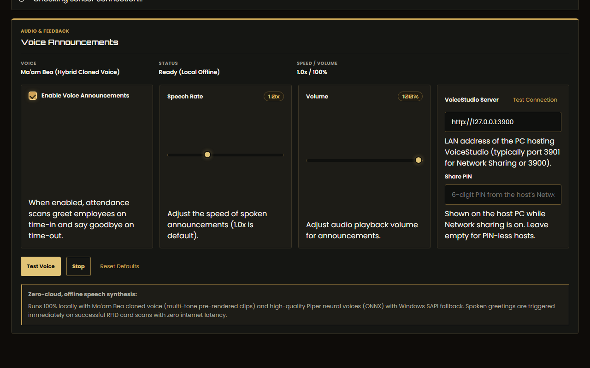
1 2 3 4 5 6| # | Control | Use |
|---|---|---|
| 1 | Enable Voice Announcements | Turn greetings on or off. |
| 2 | Speech Rate | 0.5× to 2.0× (1.0× is normal). |
| 3 | Volume | 0% to 100%. |
| 4 | VoiceStudio Server + Test Connection | Address of the PC that makes the cloned "Ma'am Bea" name clips. Leave as set by IT. |
| 5 | Share PIN | 6-digit PIN shown on the VoiceStudio PC, if it asks for one. |
| 6 | Test Voice / Stop / Reset Defaults | Play a sample, stop playback, or restore normal settings. |
The status at the top shows the voice in use: Ma'am Bea Ready, Piper TTS Ready, SAPI Ready (Windows voice), Voice Disabled or Offline TTS Unavailable. Settings are saved on this computer.
These rules apply to attendance from 1 October 2026. The app applies them automatically; this chapter explains the numbers you see.
| Rule | How it works |
|---|---|
| Office hours | 8:00 AM to 5:00 PM, Philippine time. A full day is 8 paid hours. |
| Lunch | 12:00–1:00 PM is unpaid and never counted as work. |
| Daily rate | PHP 80.00 per day (PHP 10.00 per hour). |
| On time | Tapping in up to 8:00:59 AM. Coming early earns nothing extra. |
| Late | From 8:01:00 AM, every started hour late costs PHP 10.00, counted from 8:00. 8:08 = 1 hour; 9:00:01 = 2 hours. There is no grace period. |
| Undertime | Each hour (or part) short of the 8-hour day costs PHP 10.00 — but hours already charged as late are not charged twice. |
| Half day | Arriving at 12:00 PM or later, or leaving by 1:00 PM, counts as a half day: PHP 40.00 is deducted as undertime, not late. |
| Late time-out | Tapping out at 6:00 PM or later marks the day LATE TIMEOUT for correction. Pay is worked out as if the time-out were 5:00 PM. No overtime. |
| Minimum | A day's pay never goes below PHP 0.00. |
| Absences | Each standard day not worked in the cutoff costs PHP 80.00. |
| Time in | Time out | Late | Undertime | Day's pay |
|---|---|---|---|---|
| 8:00 AM | 5:00 PM | — | — | PHP 80.00 |
| 8:00:59 AM | 5:00 PM | — (on time) | — | PHP 80.00 |
| 8:08 AM | 5:00 PM | 1 h (−10) | — | PHP 70.00 |
| 10:30 AM | 5:00 PM | 3 h (−30) | — | PHP 50.00 |
| 9:30 AM | 4:00 PM | 2 h (−20) | 1 h (−10) | PHP 50.00 |
| 8:00 AM | 4:00 PM | — | 1 h (−10) | PHP 70.00 |
| 8:00 AM | 12:00 PM | — | half day (−40) | PHP 40.00 |
| 12:30 PM | 5:00 PM | — (afternoon) | half day (−40) | PHP 40.00 |
| 8:00 AM | 6:30 PM | — | — (paid to 5:00 PM) | PHP 80.00 FIX |
These examples match the payroll engine's official test cases.
Find the problem in the left column. Try the fixes in order.
| Problem | Likely cause | Fix |
|---|---|---|
| Tapping a card does nothing | The kiosk window is not in front, or the app is hidden in the tray. | Click once on the kiosk window (or the tray icon) and tap again. Close other programs in front of it. |
| Still nothing; pill shows Offline/Error | Reader unplugged or faulty. | Unplug and replug the USB reader; try another USB port. Use Manual entry meanwhile. |
| "Card not recognized — check the reader format." | The reader sends a different number format. | Tap again. If it keeps happening, IT must match the reader settings ([scanner] in config.toml). |
| Digits appear in another program (e.g. Notepad) | That program had the focus. | Delete the digits there, click the kiosk window and tap again. |
| Wrong person's name appears | The card is linked to the wrong profile. | Admin → Users and RFID → search the card number → Edit. Fix the day in Attendance corrections. |
| Intern tapped out by mistake | The second tap is always a time-out. | Admin → Attendance corrections → clear Time out with × → Save. |
| Forgot to tap out | Day stays WORKING. | Enter the real time-out in Attendance corrections and Save. |
| Kiosk says "Gender is not set for this card" | The profile has no gender. | Edit the user and set Gender. |
| Can't unlock admin | Wrong or no PIN. | Tap an admin card, or use Forgot PIN? (Chapter 7). |
| Kicked out of admin | The 15-minute session ended. | Unlock again. Save your work before 15 minutes. |
| "This record was changed by another update" | Someone saved the row first. | The list reloads; check the times and click Save again. |
| Payroll is missing an intern | No completed day in the cutoff. | Fix that intern's attendance, then generate again. |
| Payroll shows too many absences | Standard days include a holiday. | Lower Standard days and generate again (before finalizing). |
| No voice | Muted or voice disabled. | Check Windows volume, then Admin → Voice announcements → Test Voice. |
| Problem | Fix |
|---|---|
| Phones stay on "Connecting…" | Allow port 4173 in Windows Firewall. In PowerShell as Administrator:netsh advfirewall firewall add rule name="Alpha Premier Live Attendance" dir=in action=allow protocol=TCP localport=4173 |
| Network profile shows Public | Windows Settings → Network & internet → Wi-Fi → the office network → set Private network. |
| "No reachable office LAN IP was detected." | Connect the kiosk PC to the office Wi-Fi, then Refresh status. |
| "Port 4173 is already in use." | Another program uses the port. Restart the PC, or IT changes [lan] port. |
| "Outside the office network" | The device is not on the office Wi-Fi (or the guest Wi-Fi isolates devices). Join the main office network. |
| "Viewer access required" | Add ?token= + the viewer password to the link. |
No. Taps, admin and payroll all work offline. Internet is only for updates, PIN-reset email, voice clip creation and Google Sheets.
Every tap is saved the moment it is shown on screen. When the PC comes back, the app starts by itself (if automatic start is on).
No. The front-desk computer is the only one that records. Other devices can only view through the live viewer.
Not in the app. Administrators print the Intern Payroll PDF and share it as the office decides.
The Arrival column shows minutes late; pay deducts per started hour (Chapter 14).
No. Each day remembers the rules that priced it. New rules need a software update from IT.
See Appendix B. In Admin, Show in Folder and Open backups folder take you straight there.
Messages not already explained in the chapters, in alphabetical order.
| Message | Meaning / action |
|---|---|
| Admin session expired. Please unlock again. | 15 minutes passed. Unlock again. |
| Cannot create attendance for an inactive user. | Reactivate the user first. |
| Choose a JPEG, PNG, or WebP photo. | Use one of those picture types. |
| Enter the User ID before uploading a photo. | Fill in User ID first. |
| Gender is not set for this card. Ask an administrator to set it in Users and RFID. | Set Gender on the profile; then the restroom key works. |
| Live attendance is temporarily unavailable. | The list could not refresh; it keeps showing the last data and retries. |
| No attendance matches the active filters; nothing was exported. | Change the date or filters. |
| Photo file must be under 25 MB. | Use a smaller picture. |
| This photo could not be compressed below the 500 KB upload limit. | Crop or resize the picture and try again. |
| Select a cutoff period first. / Cutoff start must be on or before cutoff end. | Set the payroll dates correctly. |
| Setup session expired. Unlock again to continue. | Unlock the Admin setup window again. |
| That User ID or RFID card is already in use by another user. | Use a different ID, or edit the existing user. |
| The User ID may only contain letters, numbers, dashes, underscores, and dots. | Remove spaces and other symbols. |
| The administrator PIN or admin RFID card is invalid. | Shown in the kiosk Admin setup window; retype the PIN or tap a registered admin card. |
| The selected file is not a valid Alpha Premier attendance database. | Choose an .apbackup made by this app. |
| This key is currently in use. Please return it before checking out again. | Return the key first. |
| Time-out cannot precede time-in. | Check AM/PM and the order of times. |
| Unable to connect to the update server… | No internet; try again later. |
| Unable to load administrator data. | Reload the page or restart the app. |
| USER_HAS_RECORDS … Deactivate the user instead. | Set the user Inactive rather than deleting. |
| Voice regeneration failed. | Check the VoiceStudio connection (Chapter 13) and try again. |
| Messages in CAPITALS_WITH_UNDERSCORES | A technical code shown as-is. Note it down and tell IT; your data is usually unaffected. |
| Item | Normal installation |
|---|---|
| Database, photos | %LOCALAPPDATA%\com.alphapremier.attendance\ (attendance.db, photos\) |
| Backups | …\com.alphapremier.attendance\backups\ |
| Payroll PDFs | …\com.alphapremier.attendance\exports\ |
| Settings (IT) | %APPDATA%\com.alphapremier.attendance\config.toml |
Portable copies (a portable.dat file next to the program) keep everything in a Data\ folder beside the .exe. Paste a path into the File Explorer address bar to open it.
| Key | Where | Action |
|---|---|---|
| 1 | Kiosk, Admin | Attendance mode |
| 2 | Kiosk, Admin | Bathroom Key Log mode |
| Enter | Manual entry, unlock boxes | Record / unlock |
| Esc | Pop-up windows | Close the window |
| Term | Meaning |
|---|---|
| Admin RFID card | A card that unlocks admin and assists others; it never records its own attendance. |
| Assisted | Attendance recorded by an admin card for someone without a working card. |
| Backdated | A past day added with Add missed attendance, with a reason. |
| Cutoff | A pay period: 1st–15th or 16th–last day of the month. |
| DTR | Daily Time Record — the optional Google Sheets copy. |
| Draft / Finalized | Payroll that can still be edited / payroll that is frozen for editing. |
| Kiosk | The always-on tap screen at the front desk. |
| LAN viewer | The read-only attendance page for devices on the office Wi-Fi. |
| LWOP | Leave without pay (absent days) in the payroll table. |
| RFID UID | The number stored on a card, usually 10 digits. |
| Standard days | Working days expected in a cutoff (weekdays minus holidays). |
| Tray | The icons beside the Windows clock, where the hidden app lives. |
Print this page and keep it at the front desk.
| Tap does nothing | Click the kiosk window, tap again. Replug the reader. |
| "Not registered" | Admin clicks Setup this card. |
| "Scanned too recently" | Already saved — do nothing. |
| Reader broken | Manual entry → type card number → Enter. |
| Window disappeared | Click the tray icon by the clock. |
| Daily | Attendance corrections → Late Time-out chip → fix and Save. Lock when done. |
| Each cutoff (16th & 1st) | Fix attendance → Payroll → month + half → adjust Standard days for holidays → Generate → review → Finalize → Generate Intern Payroll PDF. |
| Weekly | Data and backup → Create backup now → copy to USB. |
| New intern | Kiosk → Admin setup → unlock → tap card → fill details incl. gender → Save user. |
| Intern leaves | Users → Edit → Status Inactive → Save (don't delete). |
| Forgot PIN | Tap admin card, or Forgot PIN? → code from company inbox. |
Office hours 8:00 AM–5:00 PM · Lunch 12–1 unpaid · PHP 80/day · Late & undertime PHP 10/hour · Half day PHP 40 · Admin session 15 min.